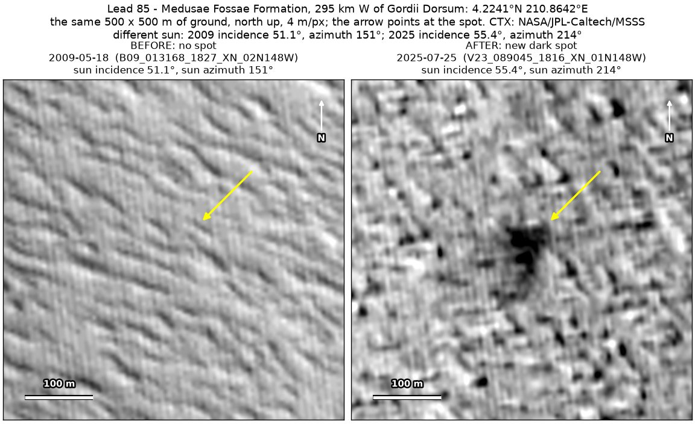
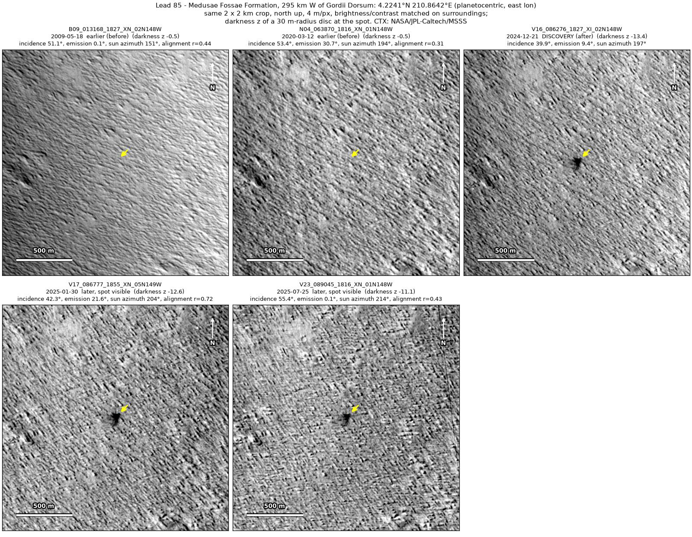
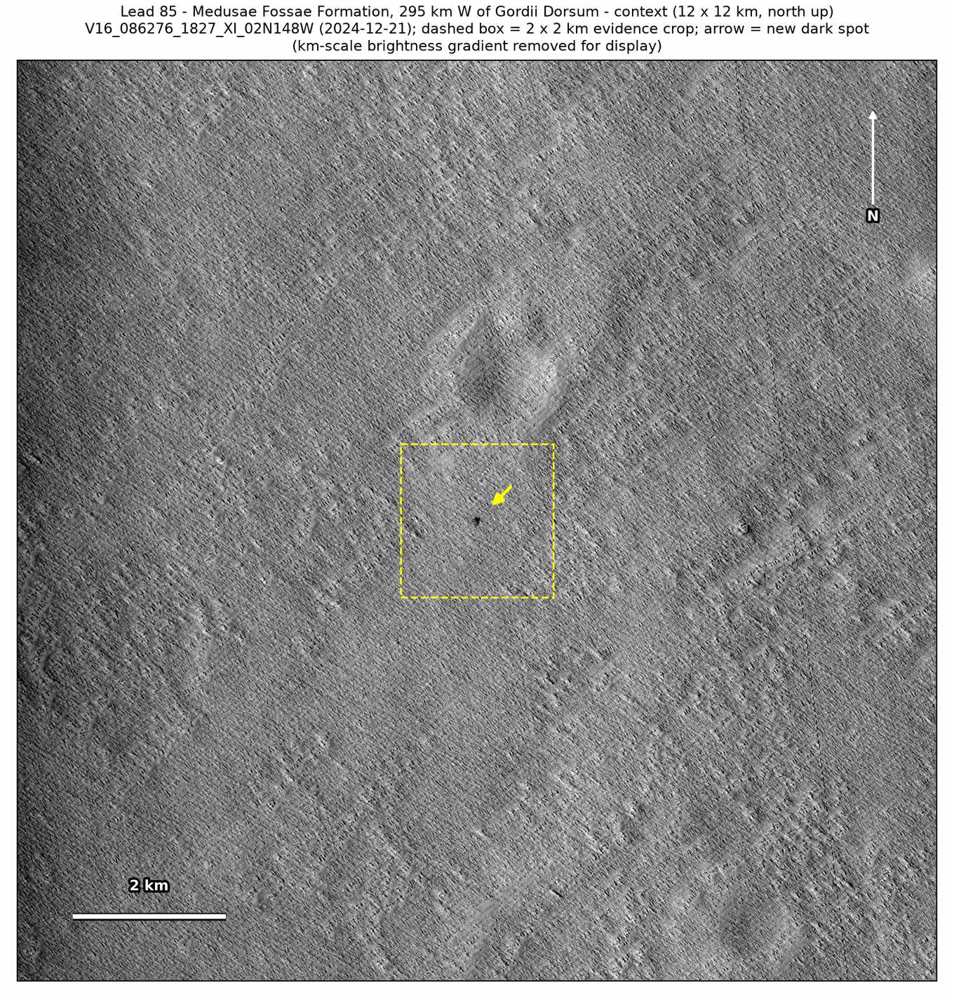
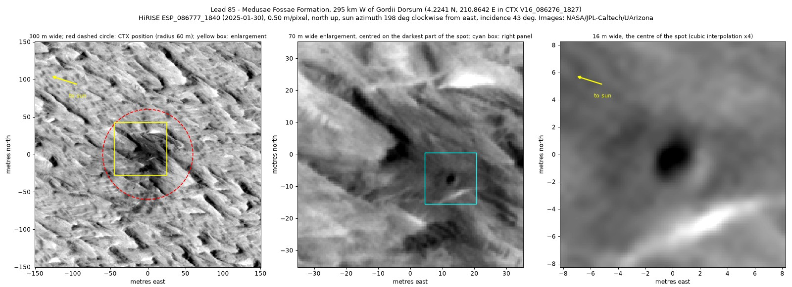
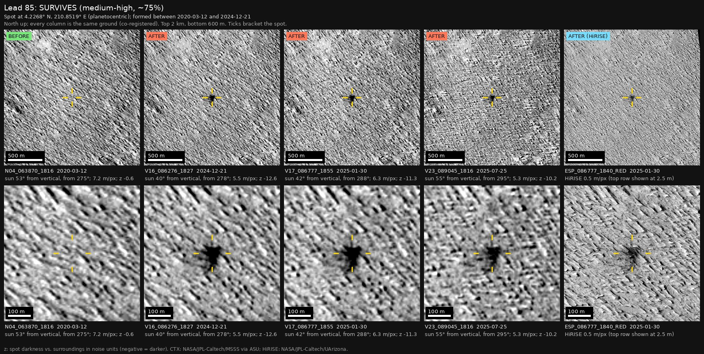
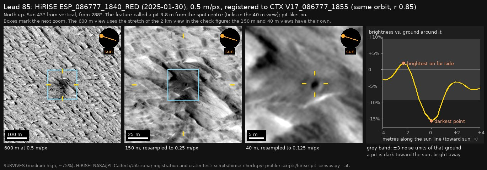

Professor of Mathematics
Paata Ivanisvili
Department of Mathematics, University of California, Irvine

← Possible new impact sites on Mars
Candidate 85: Wind-ridged ground in the Medusae Fossae Formation, 295 km west of Gordii Dorsum
Strong · roughly 90%

What changed. A compact dark spot about 60 m across, with ragged, ray-like edges, appeared on wind-ridged ground in the Medusae Fossae Formation, 295 km west of Gordii Dorsum, between March 2020 and December 2024. Three CTX images from three orbits show it, the last in July 2025.
Why it may be a new impact. Images from May 2009 and March 2020 show nothing there, yet both show a dark mark 290 m to the north, so they would have shown the spot too. When an earlier image is subtracted from a later image, the strongest change in the surrounding 2 × 2 km is right at the spot and nowhere else. A compact dark spot with ray-like edges, seen on three orbits, is how the blast zone of a small new crater looks.
- Location
- 4.224° N, 210.864° E (149.136° W)
- Absent
- 18 May 2009 and 12 March 2020
- Present
- 21 December 2024, 30 January 2025 (CTX and HiRISE) and 25 July 2025
- Size
- Dark spot about 60 m across (66 × 76 m), with ragged, ray-like margins; in the HiRISE image, a dark zone 76 × 81 m with a pit about 2 m across
- Confidence
- Strong candidate: roughly 90% likely to be a new impact.
- Caveat
- By chance, NASA’s HiRISE camera photographed the spot on 30 January 2025, on the same orbit as a CTX image, while taking a sample of the terrain rather than aiming at the spot. It shows a dark zone 76 × 81 m with dark streaks and, inside it, a dark pit about 2 m across with a brighter east rim, as a small crater lit from the west-north-west would look. The wind ridges cast shadows, and the pit is only about four HiRISE pixels across, so it may be a shadowed hollow rather than a crater; with no earlier HiRISE image, its age is unknown. Like every candidate here, it is unconfirmed: see the caveat.




